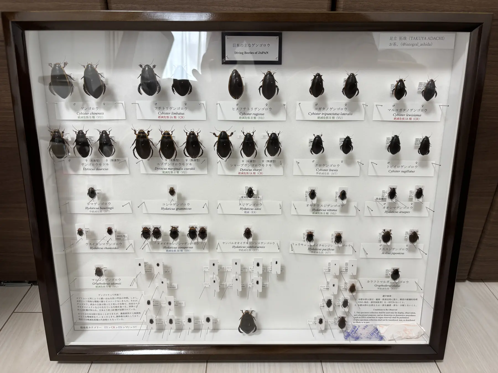

ひらめく。読み合う。水辺をのぞく。好きなことは、どこまでも。
最終更新：2026/10/24編集中です 年末までには形にしたい・・・ぽよ
高校１年生の頃、テレビ番組『高校生クイズ』に憧れて始めたのがきっかけ。とりわけ謎解きクイズが好きです！
暇だったコロナ禍に大戦をやってみたのがきっかけ。全国大会に出場できるまでに上達したので、次は目指せ世界大会！好きなポケモンはエルフーン。かわいくて、つよいので。
幼少期に読んだ一冊の図鑑をきっかけにゲンゴロウに夢中です。現在も学生時代の友人と水昆採集で楽しんでいます！
